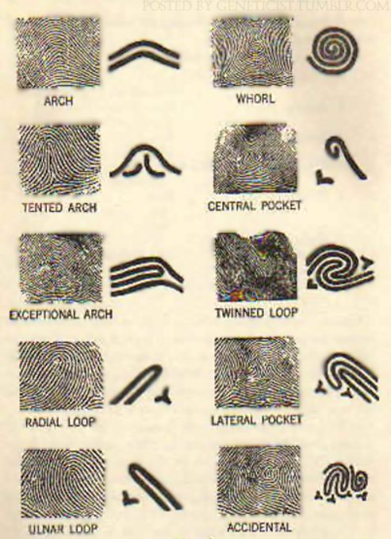

Analyze illicit drugs or identify unknown pills, powders, or liquids that may be illicit.
BIOLOGY UNIT
Analyzes evidence such as blood, semen, saliva, bones, plant matter, and insects.
Bodily fluids used to conduct DNA fingerprinting. Bloodstain patterns can reveal the positioning of an assailant.
Bones can reveal the age, sex and specific dental characteristics to help confirm the person identity.
FORENSIC SCIENTISTS
Called to crime scenes to collect blood spatter and other biological evidence.
TRACE-EVIDENCE UNIT
Analyzes evidence such as fibres, fire and explosive residues, glass, soils, paints and coatings, and other materials.
FIRES UNIT
Analyses in the firearms and tool-marks unit.
They investigate the comparison of spent bullets and
cartridges to weapons, determination of distance of firing, ability of a weapon to fire,
and restoration of obliterated serial numbers on weapons.

FINGERPRINT UNIT
Rocesses latent and patent fingerprints.
Use an automated fingerprint identification system (AFIS) or compared with inked fingerprints.
QUESTIONED-DOCUMENTS UNIT
Examiners study handwriting and typewriting to determine author or authenticity.
They may also analyze inks and papers as well as copier toners and other forms of writing.
TOXICOLOGY UNIT
Supports the work of the medical examiner.
Evaluate organs and bodily fluids to determine the presence of any substances that could have caused or contributed to death, such as drugs or poisons.
They are also responsible for determining the alcohol concentration in blood in drunk-driving cases.
DIGITAL UNIT
Handle evidence such as digital photographs and data retrieved from computers and personal electronics.